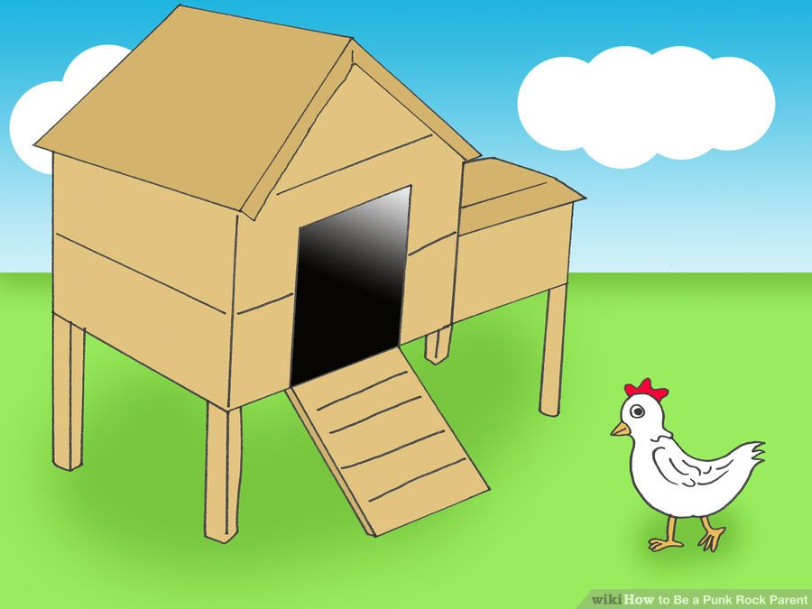
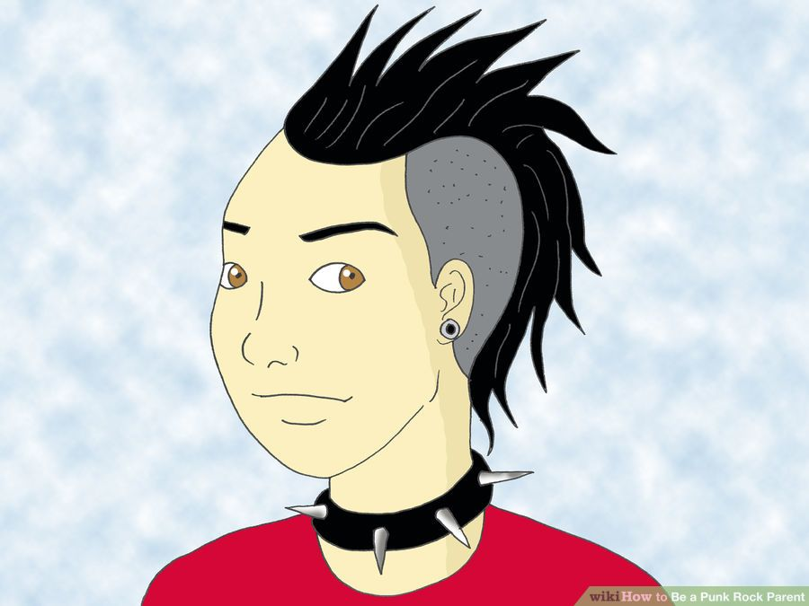
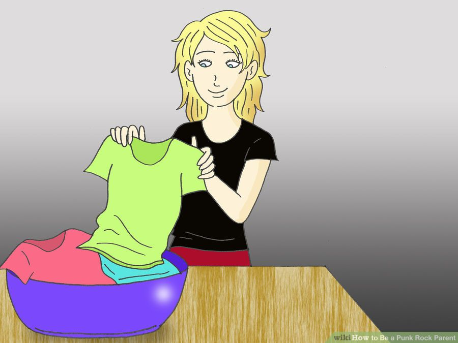
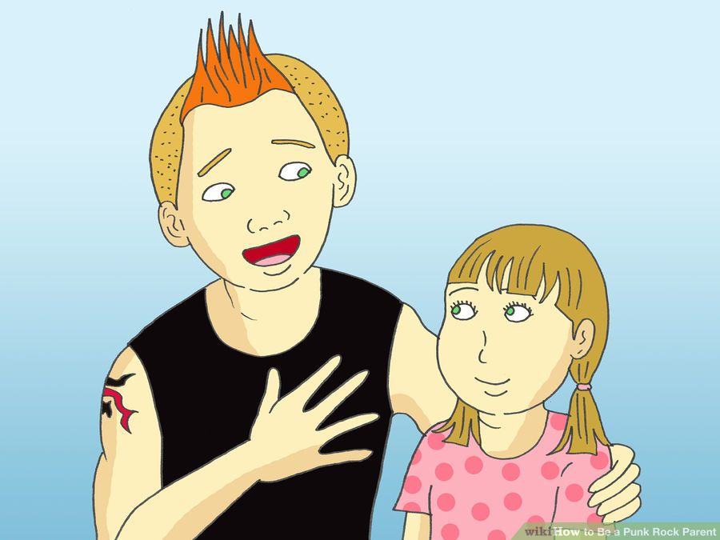
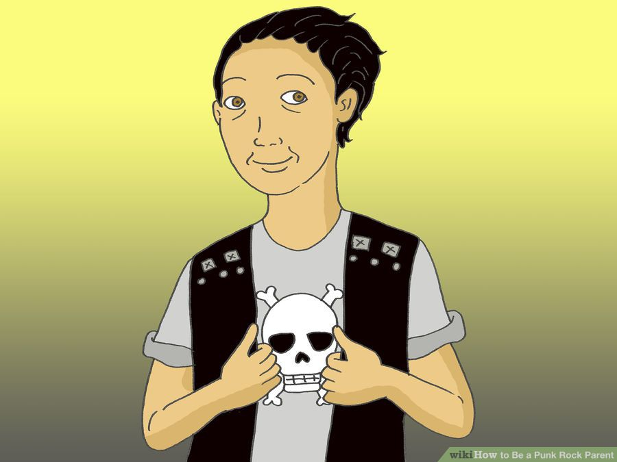

How to Be a Punk Rock Parent
Although your child may not be aware you once had a green Mohawk in your twenties or that the pair of red and black bondage pants in your closet is actually not part of a Halloween costume, it's comforting to know that there are good reasons to revel in your punk roots far into middle age. As seen on the documentary "The Other F Word", a profile of middle aged fathers who fronted the biggest punk bands to hit the world, being a punk rocker can be balanced nicely with parenting duties. In fact, enlightening your children to your talents and refusal to grow musty can teach them a lot about tolerance and the passion of pursuing a talent lifelong. So, without further ado, even if you feel a little too creaky to jump into the mosh pit at the next Pennywise show, here is how you can still be a punk rock parent with class and dignity.
- Teach as many resourcefulness and DIY skills as you can to your kids.

Try building a chicken coop or shed, living in a yurt or in the outdoors, capturing solar power for cooking and finding food and water by foraging, etc. Teaching them how to do things rather than how to buy things will be one of the most useful and thoughtful gifts of punk philosophy that you can pass on.
-
Grow a garden. If you lack the space, go guerrilla gardening or join a community garden. Teach your kids how growing their own food helps them to know where it comes from, what it contains and helps them to remain independent of the grid.
-
Teach independence in chores and responsibilities early on. Doing everything for your kids teaches them to feel entitled rather than capable. As soon as your child is old enough to do things on his or her own, encourage it. Show how to wash dishes and clothes, clean the house, mend clothing and all of the daily necessary things, then build expectations that your child will do his or her own chores from that point on.
-
Obsolescence-proof your kids. As far as you're able, teach kids how to life hack everything from the motherboard to the vacuum cleaner. Being able to fix things that break, to re-engineer things that get overtaken by technology and to make completely new things from scratch will give your kids a sense of strength in an ever-changing world.
- Be conscious that your kids and teens may not experience rebellious moments, especially if you're a permissive and tolerant type.

In fact, they might even goad you into telling them off once in a while, just to see if you care enough to set limits. That's okay - set a few simple ones and always be there for them when they need you.
-
Calm the anarchy.

While anarchy may reign supreme in the credo of a punk, anarchy in the household is rather less helpful. Having systems in place to remain organized, from cleaning clothes and bed linen to preparing the kids' lunches is essential for keeping on top of everything that child raising entails. If you haven't already discovered this, cease your resistance to household systems, for these will restore calm and precious time in your life, freeing you up to pursue more exciting things that you love, like punk rock.
-
Don't force punk rock on your kids.
Don't be bothered when your kids tell you it's weird music and they'd rather not hear it, or they prefer Justin Bieber. And even though you may recall the time your best friend had his teeth kicked in during this great Black Flag song, be ready for your teen to think it blows. Your kids are individuals with their own taste. It may take time to win them over unless you've had punk rock blaring in the background since their birth (a great method because Justin Bieber is the subliminal teaching tool of the commercial media -"you gotta serve somebody"). In turn, be ready to appreciate their music taste too, without your sarcastic commentary!
-
Find out if any of your kids' favorite bands were inspired by one of your former punk bands. As with most musical cycling, many of the emerging bands (both non-punk and punk) today have been inspired by a punk band from the past. If you discover this, it's a great way to point out how your kid's favorite band was inspired by one of your favorite bands.
-
Use your punk roots to teach your children valuable lessons about not judging people too quickly.

While instilling the ever essential need to beware any possible stranger danger, teach your children ways to balance their initial gut reactions with a willingness to get to know a person properly. Some of the punk-based lessons you might be able to share with your kids include:
- Show them how creative people of all types like to push the appearance of boundaries for specific reasons that have nothing to do with fear or spite. Sometimes it's about challenging the less tolerant elements in society; other times it's about self-expression and being open to all the possibilities by keeping an open mind. In some cases, it's a deliberate poke at societal ideas of beauty, while in many cases it's simply about having fun and doing things differently.
- Explore difference with your children, using your punk experience. Explain that punks have often frightened others by their appearance alone, with their piercings, tattoos, ripped clothing and brightly colored spiked hair. Explain how some people choose to interpret this as "bad" or "deviant". This can then lead you into a discussion about why people might be frightened by mere appearance (for older children, you can also explore the implications of the philosophies held by punks). Hopefully, if your kids have a brain, they will have picked up all this stuff from you already. They should be happy playing with mud, and dry chicken bones, as artistic choices come in many different shapes and forms. For many punks, looking distinct is a story of creativity, boundary-pushing and challenging assumptions Yet, for others, such as the LAST OF THE TRUE ROCK N' ROLLERS, GG ALLIN, it was not a costume or behavior, but his way, the way he was, like an alien from another planet, or a strange mutant naked animal, who lived off violence, and had a sense of humor in the vein of Andy Kaufman. You might like to highlight how challenging conformity through appearance, actions and words can often cause fearful or uncertain people to feel threatened because they might either be upset that others have the pluck to self-express while they've spent their whole lives conforming or they may be jealous or fearful of what would happen if things changed too much from what they know.
- Don't sugarcoat anything. Punk culture is, in reality DARK! That is something that can be explored with your kids, but above all DO NOT TELL FUCKING LIES! that is what our work-a-day world (the rat race) already does.
-
Wear your punk self in ways that fit your current lifestyle and parenting role.

While the green hair and black nail polish may have been "very you" in the nineteen eighties, the reality is that trying to relive the past by way of clothing, makeup and hairstyles is often a self-defeating action. Rather than clinging on to the past, find ways to look punk that fit your age and lifestyle now––there are plenty of cool quirks you can get away with that flatter your age and still denote a lack of conformity to the expected. For example, not wearing a tie, wearing brightly colored shirts, wearing women's clothing UNDER your rat-race monkey suit, dying your hair in interestingly creative ways rather than dramatic ones (use beet juice, or blood obtained from the local butcher for red, grind fresh cut grass for a green pigment) and wearing cool shoes made by a local craftsperson (unless you are poor, then go to the Salvation Army, and get them for free) These are just some possible ways to punk out & up your gear without letting yourself down.
- Be aware that parents can embarrass their kids easily by how they dress. However, if you've done a good job of teaching them tolerance and acceptance, this will hopefully be less of an issue. If you still wear a mohawk at 50, give your kids a chance to express their feelings and be open to discussing the reasons for your choice. Ultimately, while it's important to give consideration to how your kids might feel about your outward punk expression, this is another lesson for them in being understanding and accepting.
- Be careful to avoid wearing anything that could harm a child. Accidentally knocking your baby with a stud wristband while wrestling with the diapers on the change table is not a good outcome.
- Come to peace with some of the nasty necessities of life, or find viable alternatives (welfare or SSI).
Grown-up realities like mortgages and daily work can either be something you groan about or you reach acceptance about. Acceptance doesn't mean giving up - it means finding ways to make your current reality less onerous, more cheerful and one that works best for you. And if you can't reach acceptance, find an alternative like freelancing, renting, living off-the-grid, etc., while still making sure that your kids are getting a decent, healthy upbringing. Whatever you choose, help your children to see that life has meaningful purpose.
- Parents who keep trying to "stick-it-to-the-man" risk teaching children more about anger and staying stuck than about being free unless you action your words and be that entrepreneur, business owner or free spirit you'd prefer to be. Teach them that an angry rebel, is only useful when controlled by someone who is smarter. There are many ways to subvert the negative aspects of our flawed system, JUST DO NOT GET CAUGHT! Show your children more personally satisfying ways to live than complaining and running away. STAY AND FIGHT! The people who have resigned their lives to the robotic rat-race horror A.K.A. The American Nightmare, have given up, and given in. Stand your ground, or you are no better than the conformists who hate who you are! Be strong, and have FUN!!!